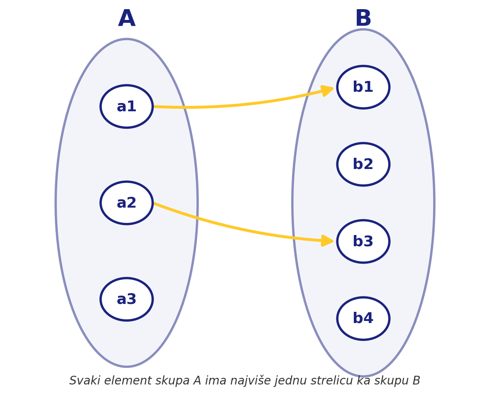

Teorijski koncepti: Iskazna logika i relacije
1. Iskazna logika
U okviru matematičke logike, iskazne formule se grade od osnovnih elemenata: iskaznih slova, logičke konstante kontradikcije (⊥) i operacije implikacije (→).
Važan deo ove oblasti je valuacija, koja nam omogućava da odredimo istinitost složenih formula. Jedan od ključnih teorijskih rezultata je:
- Teorema kompaktnosti: Povezuje zadovoljivost beskonačnih skupova formula sa njihovim konačnim podskupovima.
2. Binarne relacije i funkcionalnost
Binarna relacija f između skupova A i B je funkcionalna (ili predstavlja parcijalnu funkciju) ako ispunjava strogi uslov da svakom elementu domena odgovara najviše jedan element kodomena.

U elementarnoj aritmetici često proučavamo relaciju deljivosti. Neke od njenih osnovnih osobina su:
- Refleksivnost: Svaki broj deli samog sebe (n|n).
- Tranzitivnost: Ako a|b i b|c, onda a|c.
3. Značajne teoreme
Jedna od najpoznatijih teorema u teoriji brojeva je Vilsonova teorema, koja daje potreban i dovoljan uslov da prirodan broj n veći od 1 bude prost, izražen preko kongurencije (n-1)! = -1 (mod n)